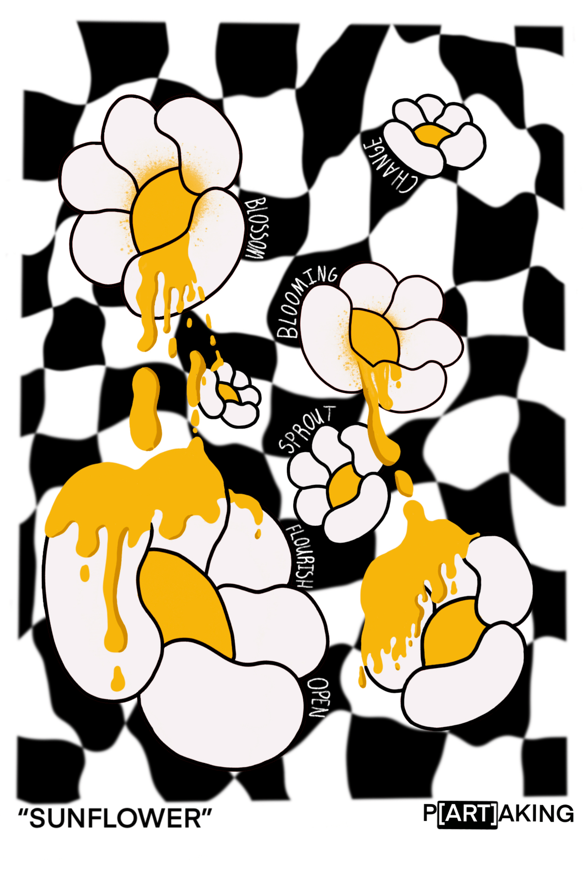

The main goal behind “P[ART]AKING” was to craft something that not only held deep meaning but also possessed the capacity to resonate with a wide spectrum of individuals from diverse cultural and social backgrounds. This personal project served as the developmental stage in establishing a community for artists and designers to come together, converse, and engage in collaborative works.



The initial set of sketches served as a way for me to capture a handful of various designs. My ultimate goal was to fashion an item that not only resonated deeply with myself but also was suitable for a wide audience. After countless hours, I had finally settled on a sketch of sunflowers .


In the third week I spent cleaning and polishing up the design. I removed a couple details that I thought did not look as nice and implemented a couple small details that helped the design pop and make it unique by adding a melting effect to the flowers.


In the fourth week came designing posters and developing the sweater. I had spent a couple days finding a source to develop the sweaters that were comfortable. As for the poster itself, I wanted to include the sweater design on it, my goal was to showcase the design.
Lastly came photography and mockup for posters. I had finally received my sweaters and had begun doing a shoot to showcase the project properly. My main objective was to be able to highlight the vibrant colors and make the subject pop. As for creating the mockup of the poster, I wanted to have an environment that looked natural and gave an urban feel.